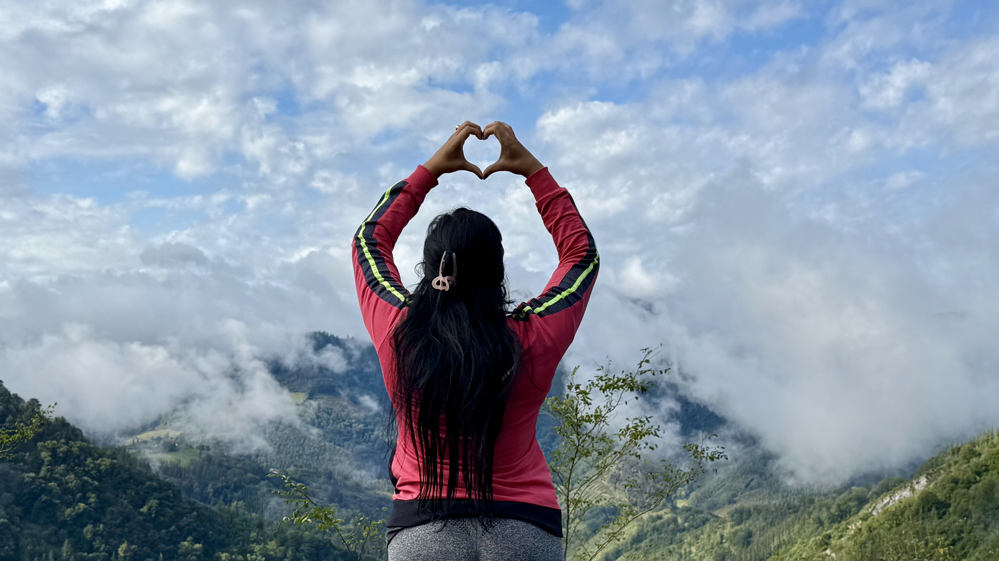
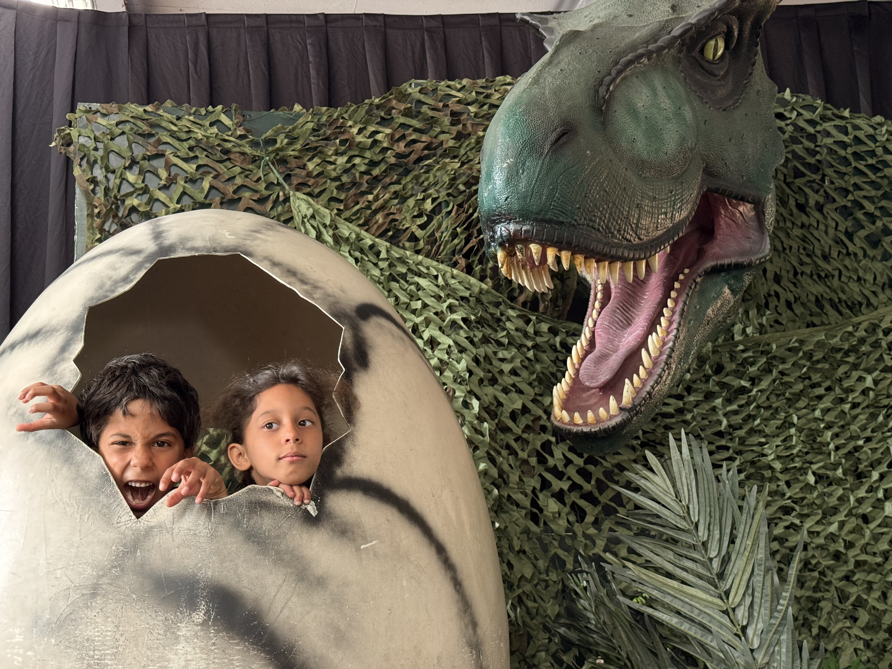
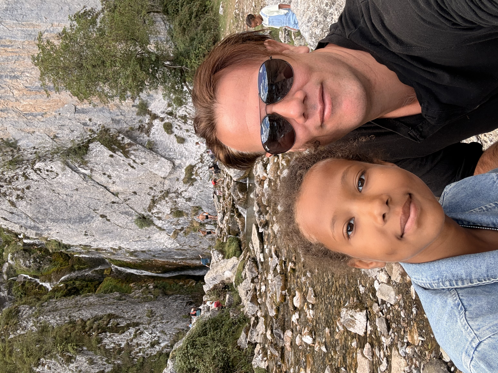

Tout le carnet du voyage, avec les offres repérées, les variantes et les vérifications encore nécessaires.
RomainSihamLyaNaïmAlicia
Prix / horaires relevés le 09/10Montants estimésÀ confirmer avant de réserver
Les décisions qui restent de votre côté
À calculer & confirmer
Les 2 164 € constituent un budget de travail pour cinq, pas un devis ni une réservation. Voici précisément ce qu’il reste à ajuster.
1
Péages et kilomètres définitifs
Estimation190 € de péages + 2 600 km budgétés
Recalculer chaque étape avec les bons points de passage, le contournement de Lyon et la catégorie réelle du Partner. Si le retour devient sans péage, modifier aussi le carburant. Économie nette estimée : 60–90 €.
2
Le plein réellement nécessaire
À recalculer500 € de gazole
Le calcul retient 8 L/100 km à 2,40 €/L. Mettre à jour le prix à la pompe et ajouter environ 31 € si la consommation atteint 8,5 L/100 km.
3
Les quatre réservations pour cinq
À confirmer658 € en offres non remboursables
Vérifier les prix finaux, la disponibilité, le linge, toute caution, les horaires et les couchages. Pontarlier est sur demande de l’hôte. À Interlaken, décider si le compromis de la note 6,1/10 est acceptable. Les versions annulables repérées : 729 €, soit +71 €.
4
Parkings et petits transferts
Estimation50 € d’enveloppe
Parking privé gratuit relevé à Interlaken et parking ouest gratuit à l’Aar. Confirmer le stationnement des autres logements et de Grindelwald. Ne pas considérer cette enveloppe comme un tarif exact.
5
La nuit tente + voiture
Option à valider50–70 € pour cinq, si retenue
Manor Farm n’accepte pas les réservations de court séjour : place attribuée sur place. Confirmer la parcelle pour tente + Partner avec couchage, l’électricité éventuelle et les taxes. Vérifier les duvets et matelas ; l’achat de tout le matériel n’est pas compris. Garder un repli en logement.
6
Les billets et réductions
À confirmer372 € sans remise
Vérifier la météo et l’exploitation avant First le 25. Demander la carte d’hôte pour les cinq voyageurs ; ne pas supposer les deux foyers éligibles à un même billet famille. Remises non déduites de la base.
7
Repas, change et vignette
Estimations à adapter250 € de repas · 1 CHF = 1,10 € · 44 € de vignette
Préparer une liste de courses et le montant disponible au départ. Vérifier les frais de carte bancaire et le change. Si la voiture possède déjà une vignette suisse valide, retirer 44 €.
8
Météo et conditions pratiques
À vérifierÀ revoir 2–3 jours avant le départ
Vérifier les webcams, le vent, la neige et les fermetures ponctuelles. Pièces d’identité pour cinq, sièges/rehausseurs, forfait mobile incluant la Suisse et équipement chaud. La réserve de 100 € ne couvre pas une grosse réparation mécanique.
Vous et Siham, avec Lya (11 ans), Naïm et Alicia (8 ans). Deux conducteurs ; marches de 2 à 3 heures possibles. Peugeot Partner Tepee diesel, consommation retenue : 8 L/100 km.
Le circuit vise 7 de vos 19 repères : Taubenloch, First Cliff Walk, gorges de l’Aar, grottes de Saint-Beatus, Spiez, Gibloux et Pissevache. First impose le dimanche 25 : fermeture pour révision dès le 26. Calendrier officiel
Budget pour tout le groupe
Base de calcul
Montant
5 nuits en logement
Offres observées, détails page 4
658 €
Gazole
2 600 km × 8 L/100 × 2,40 €/L
500 €
Péages français
Enveloppe pour les trajets rapides
190 €
Vignette suisse
40 CHF, si vous ne l’avez pas déjà
44 €
Stationnement / petits transferts
Enveloppe pour les visites et logements
50 €
Courses et repas
Cuisine, pique-niques, sans restaurant
250 €
First + Aar + Saint-Beatus
212 + 50 + 76 = 338 CHF, sans réduction
372 €
Sous-total
2 064 €
Réserve
Météo, consommation, petits écarts
100 €
Total de travail
Partage strict 50/50
2 164 €
À prévoir : environ 2 100 à 2 250 €, soit 1 050 à 1 125 € chacun. Le partage est bien par moitié entre vous deux, et non au nombre d’enfants.
Avec une nuit de camping : environ 2 000 à 2 150 €. Version la moins chère chiffrée (une nuit de camping, sans First ni intérieur de Saint-Beatus, retour avec moins de péages) : environ 1 650 à 1 800 €, soit 825 à 900 € chacun. Ces variantes supposent un emplacement disponible et un équipement déjà adapté au froid.
Hypothèses : 1 CHF = 1,10 € pour budgéter (marge par rapport au cours BCE du 8/10, environ 1,072 €). Gazole observé à Monein : 2,359 €/L le 8/10. À 8,5 L/100 km, ajouter environ 31 € sur 2 600 km. Le kilométrage de 2 500 à 2 650 km et les péages sont des estimations, pas un devis routier figé. Gazole • Change BCE • Vignette
02
PLANNING • PREMIÈRE MOITIÉ
Du Béarn aux Alpes
Samedi 24 octobre
Monein → Pontarlier | nuit 1 à Pontarlier
06 h 00 : départ avec petit-déjeuner et pique-nique préparés. Relais au volant et pause toutes les deux heures environ. 18 h 00-19 h 00 : arrivée visée, repas et repos. Aucun site touristique programmé ce jour-là. Prévoir environ 980 à 1 030 km et 10 à 10 h 30 de conduite, auxquels ajouter les pauses. Les résultats Google Maps du 9/10 étaient de 976 km / 9 h 40 via A9, et 1 004 km / 9 h 33 via A89 ; ils ne prédisent pas le trafic du 24/10. Le tout sans péage affichait 903 km / 11 h 52 avant pauses : économie réelle, mais très longue première journée.
Trajet à saisir : Monein → Toulouse → Montpellier → contournement extérieur de Lyon → Dole → Pontarlier. Si passage près de Lyon, éviter M6/M7 et le périphérique Laurent-Bonnevay ; votre diesel 2010 est vraisemblablement Crit’Air 3. Privilégier le contournement A46/A432. Périmètre et règles officiels de Lyon
07 h 30 : départ. 09 h 00-10 h 30 : gorges du Taubenloch depuis Frinvillier, aller-retour, environ 4 km. Le parking mentionné par l’association se trouve après le petit pont, vers la lisière ; les places du restaurant sont réservées à ses clients. 10 h 30 : route vers Grindelwald ; pique-nique à emporter. Viser le stationnement vers midi et la télécabine vers 12 h 30-13 h 00. 13 h 00-15 h 30 : First Cliff Walk, panorama, déjeuner et courte promenade. 16 h : redescendre avec marge ; arrivée au logement vers 17 h. Environ 220 à 250 km / 3 h 30 à 4 h de conduite sur la journée. Si retard, supprimer Taubenloch pour préserver First.
First : télécabine environ 25 minutes, passerelle environ 20 minutes. Dernière descente publiée le 25/10 : 17 h. Ne pas ajouter systématiquement le Bachalpsee (environ 2 h aller-retour) à ce dimanche déjà rempli. Pour le faire, supprimer Taubenloch, arriver tôt à First et vérifier neige/glace sur le sentier. Le 25/10, passage à l’heure d’hiver en France et en Suisse. First • Taubenloch
Lundi 26 octobre
Gorges de l’Aar → lac de Brienz → Saint-Beatus | nuit 3 à Interlaken
08 h 45 : départ ; 09 h 30-11 h 15 : gorges de l’Aar, entrée ouest, retour à pied au parking (environ 2,8 km au total). 11 h 45-13 h : pique-nique et promenade à Brienz. 14 h-16 h : Saint-Beatus, en comptant l’accès à pied, la visite de la grotte et les pauses. 16 h 30 : retour au logement, dîner maison. Environ 100 à 120 km / 1 h 45 à 2 h de conduite. Avec l’option tente : quitter Saint-Beatus vers 15 h 30 et arriver au camping vers 16 h ; monter la tente de jour.
Aar : ouverture publiée 08 h 30-17 h 30 jusqu’au 1er novembre ; parking ouest gratuit. Saint-Beatus : 09 h-18 h le lundi, saison jusqu’au 8 novembre. Les gorges et les grottes peuvent fermer en cas de fortes pluies. Aar • Saint-Beatus
08 h 30 : départ, bagages chargés. 09 h-10 h : château de Spiez vu de l’extérieur, parc et baie. Le musée n’est pas inclus ; il ouvre à 10 h le mardi. 11 h 15-13 h : Gibloux, accès court par Avry-devant-Pont et la Route de la Tour, jusqu’au parking avant la barrière. Compter 30 à 40 minutes de montée à pied, la tour et le retour, avec pique-nique. Ne pas prendre la boucle de 9 km depuis Sorens. 13 h : route vers Vernayaz par Bulle, Vevey/Montreux et la vallée du Rhône. 14 h 45-15 h 30 : cascade de Pissevache, arrêt court au pied de la chute, accès autorisé uniquement. 16 h 30-17 h 30 : arrivée à Thonon par Saint-Gingolph et Évian. Environ 260 à 300 km / 4 h à 4 h 30 de conduite.
Le parc de Spiez est gratuit ; la tour du Gibloux aussi, d’avril à octobre selon la météo. Pissevache est un arrêt gratuit, avec un débit variable. Ce mardi, les gorges du Trient voisines n’ont pas d’ouverture publiée : leur proximité ne suffit pas à les ajouter. Spiez • Gibloux • Accès court • Pissevache
Mercredi 28 octobre
Thonon → Clermont-Ferrand | nuit 5
09 h-10 h 30 : promenade gratuite au bord du Léman si la météo est agréable. 11 h : départ vers Clermont-Ferrand par le contournement extérieur de Lyon. Arrivée vers 16 h-17 h avec repas et pauses. Environ 360 à 390 km / 4 h de conduite. Courses, jeux et dîner à l’appartement ; pas de nouvelle excursion payante. Option économie : départ dès 08 h 30-09 h et itinéraire sans péage. Prévoir environ 6 à 7 h de conduite plus pauses ; supprimer la longue promenade du matin. Recalculer le tracé en respectant la ZFE de Lyon.
Jeudi 29 octobre
Clermont-Ferrand → Monein | retour à la maison
08 h 30 : départ. Trajet rapide : environ 588 km / 5 h 40 hors pauses, par A89/A20 puis Toulouse et A64, arrivée visée 16 h-17 h. Option économie : Google Maps affichait une alternative sans péage via D1089 de 516 km / 7 h 52, contre 619 km / 7 h 28 par A75. Choisir la plus courte réduit aussi le carburant ; avec pauses, viser une arrivée vers 18 h 30. Ces durées sont des relevés du 9/10 à recalculer au départ.
Si la météo impose de renoncer à First
Dimanche : conserver Taubenloch puis une promenade dans la vallée de Lauterbrunnen ou au bord des lacs. Vous économisez environ 233 € de billets First. Les journées de lundi et mardi restent utilisables ; First ne pourra pas être reporté au 26 ou au 27.
Si les gorges du Trient deviennent prioritaires
Il faut changer l’entrée en Suisse : nuit du 24 côté Thonon/Annemasse, puis Trient le dimanche 25 entre 11 h et 17 h, Pissevache et transfert vers l’Oberland. Cela remplace First et Taubenloch. Trient coûte 34 CHF pour 2 adultes et 3 enfants aux tarifs individuels ; éventuel tarif famille à vérifier pour deux foyers. Le logement du 24 doit alors être recherché à nouveau : les prix page 4 concernent la boucle principale. Horaires et tarifs du Trient
04
OFFRES RELEVÉES EN DIRECT
Les cinq nuits
Recherches du 9/10/2026 avec 2 adultes et 3 enfants âgés de 11, 8 et 8 ans. Montants pour tout le groupe, taxes et frais affichés compris. Aucun achat ni réservation effectué. Les prix en euros peuvent changer avec le change et la disponibilité.
96 m², 2 chambres, cuisine ; 2 lits doubles + canapé-lit. Note 8,4/10 (15 avis). Sur demande : réponse de l’hôte sous 24 h. Tarif non remboursable ; option annulable avant le 23/10 à 122 €.
48 m², cuisine ; chambre avec lit superposé et 2 canapés-lits dans le séjour. Note 7,9/10 (76 avis). Non remboursable ; option annulable avant le 27/10 à 63 €. Confort simple, répartition des couchages à accepter.
57 €
Total : 5 nuits
Les quatre versions annulables totalisent 729 € ; respecter les échéances affichées.
658 €
Alternatives qui méritent comparaison
Pontarlier : ibis budget, deux chambres triples proposées pour 114 € le 24/10, solution à regarder si la demande de l’appartement n’aboutit pas. Clermont : Appartement T3 Clermont-Ferrand, 70 m², 2 chambres + séjour, note 8,6, proposé à 82 € ; supplément de 25 € pour une configuration plus classique. Voir le T3
Interlaken : Jobling’s Holiday Apartment était proposé à 551 € pour les deux nuits, note 9,2 ; Mon Amour Apartment à 561 €, note 8,8. Ces alternatives plus chères ont été vues dans les résultats, sans vérification détaillée de toutes leurs conditions. Spiez n’a pas donné de meilleure offre : premier appartement local à 771 € pour les deux nuits.
Ce qu’il faut contrôler avant de payer
Choisir l’unité pour cinq, conserver les âges des enfants et regarder le montant final. Vérifier les horaires d’arrivée, le linge, le parking et toute caution éventuelle. L’offre à 110 € de Pontarlier exige l’accord de l’hôte : elle ne garantit donc pas immédiatement votre étape. Pour le logement suisse, lire les avis récents avant d’accepter le compromis de propreté.
05
TENTE, REPAS ET RÉDUCTIONS
Les économies utiles
Une nuit de tente + voiture : lundi 26 octobre
Camping Manor Farm, Unterseen est ouvert toute l’année. Sa page d’accueil indique que les courts séjours ne se réservent pas : attribution sur place, selon disponibilité. Réception en octobre : 08 h-11 h et 15 h-18 h. Arriver vers 16 h, en gardant une solution de repli en dur.
Calcul indicatif au tarif 2026 : 2 adultes à 14 CHF + 3 enfants à 7 CHF = 49 CHF. Avec une parcelle à 20 CHF et la réduction de basse saison de 40 % sur personnes/parcelle : (49 + 20) × 0,60 + 2 × 2,80 CHF de taxes = 47 CHF, soit environ 52 €. Électricité éventuelle : 4 à 5 CHF en plus. Retenir 50 à 70 € selon la parcelle. Ce calcul n’est ni un devis confirmé, ni une garantie d’emplacement. Grille officielle 2026
Le tarif de réservation de 40 CHF figurant dans la grille concerne les réservations de parcelle ; il n’est pas ajouté à cette estimation de court séjour sans réservation. À l’accueil, confirmer qu’une seule parcelle peut recevoir votre tente et votre Partner avec deux personnes dormant dedans. Ne pas prendre une parcelle réservée aux tentes si la voiture ne peut pas y rester.
L’appartement New West pour la seule nuit du 25 au 26 était affiché à 211 €, annulable avant le 20/10. L’ensemble 211 € + camping 50 à 70 € remplace les 381 € de deux nuits : économie de 100 à 120 €. Le couchage froid ne vaut cette économie que si vous possédez déjà matelas isolants et duvets adaptés. En cas de pluie persistante, gel ou matériel insuffisant, garder les deux nuits en logement. Ne pas compter sur le moteur pour chauffer la voiture la nuit.
Les billets à acheter séparément
Visite
Calcul pour vous cinq
Meilleur levier vérifié
First
2 × 76 + 3 × 20 = 212 CHF
Cliff Walk inclus ; aucun forfait d’activités nécessaire. Tarif publié 2026 par l’office de tourisme. Partenaire Swiss Railways : 232 € au total. Tarifs
Aar
2 × 13 + 3 × 8 = 50 CHF
Carte d’hôte Interlaken/Jungfrau/Brienz : -20 %, soit 40 CHF. Tarifs officiels
Saint-Beatus
2 × 20 + 3 × 12 = 76 CHF
Carte d’hôte : environ 64 à 65 CHF selon application du tarif. Billet famille seulement en caisse ; ne pas supposer deux foyers éligibles. Billetterie
Demander la carte d’hôte gratuite au logement suisse ; vérifier qu’elle est bien émise pour les cinq voyageurs. Aucun gain de carte n’est déduit du budget de base. Les cartes Junior à 30 CHF par enfant ne sont pas intéressantes pour First seul à 20 CHF/enfant ; les deux familles ne donnent pas droit à une troisième carte gratuite au titre d’une seule fratrie. Les grands pass ferroviaires n’ont pas d’intérêt démontré pour cette boucle en voiture. Réductions carte d’hôte 2026
Courses en France avant la frontière, petits-déjeuners au logement, gourdes, pique-niques et repas simples : viser 250 € pour six jours. Les courses du dimanche sont plus compliquées ; anticiper le samedi. Supprimer First économise environ 233 € ; supprimer l’intérieur de Saint-Beatus, environ 84 €. Conserver l’Aar pour garder une grande visite de gorge.
06
VOS CŒURS GOOGLE MAPS
19 envies, notre sélection en images
En vert, les 7 lieux retenus dans le circuit. En rouge, les 12 lieux non retenus cette fois, avec la raison. Les visites retenues restent soumises à la météo et à l’ouverture effective.
Les photos illustrent les lieux, sans garantir l’enneigement, les couleurs ni les conditions de fin octobre.
07
MODE D’EMPLOI
Bien préparer le départ
Le départ se prépare à cinq…Photomontage · scène imaginée

Au chaud, là-haut
Chaussures adhérentes, couches chaudes, imperméables et lampes. Regarder les webcams avant de monter.

Les petites pauses
Pique-niques prêts, gourdes, goûters et jeux pour la route. Un relais au volant et une pause environ toutes les deux heures.

Prêts à partir
Pièces d’identité pour les cinq, sièges adaptés, forfait mobile suisse et réservations vérifiées.
Choisir sans mauvaise surprise
Mon choix selon votre priorité
Pour garder le grand panorama demandé : conserver First, les deux nuits au même endroit dans l’Oberland et le circuit à sept repères. Viser 2 200 € au total. Le faible tarif suisse trouvé implique toutefois un logement peu bien noté ; une alternative à 551 € ajoute 170 € au séjour, soit 85 € chacun.
Pour descendre au plus bas sans changer les dates : une nuit de camping le 26 si possible, balades gratuites le dimanche à la place de First, conserver l’Aar mais remplacer l’intérieur de Saint-Beatus par une balade au lac. Départ matinal les 28 et 29 avec moins de péages. Viser 1 650 à 1 800 € ; ce montant n’est pas garanti tant que le camping et le matériel ne sont pas validés. Ce choix renonce à deux visites intérieures/équipées pour économiser environ 480 à 530 € au total.
Le retour sans péages
Les deux étapes séparées offrent plus de souplesse que l’aller. Le trajet Évian-Clermont affichait chez Mappy 3 h 45 par autoroute contre jusqu’à 6 h 40 selon option, avec jusqu’à 38,40 € de péages. Clermont-Monein offre une variante sans péage plus courte mais environ 2 h 10 plus lente. Estimer 60 à 90 € d’économie nette sur le retour, à recalculer selon le tracé et le carburant ; ne pas cumuler arbitrairement la meilleure distance et le meilleur temps de deux itinéraires différents. Comparatif Mappy
Météo et réservations
À cette distance du départ, la météo du séjour n’est pas encore connue. Regarder les prévisions et webcams deux ou trois jours avant. Si First est dans les nuages ou interrompu par le vent, ne pas dépenser plus de 200 CHF uniquement pour cocher un lieu. Acheter la remontée après vérification de l’exploitation, si les conditions de vente et la disponibilité le permettent. Pour les chemins, neige ou glace = sortie raccourcie ou remplacée ; garder une arrivée en vallée avant la nuit.
Le 26, une forte pluie peut affecter à la fois l’Aar et Saint-Beatus : ce ne sont pas des replis automatiquement garantis. Prévoir jeux, promenade en ville et repas au logement si les exploitants ferment. Une visite intérieure du château de Spiez peut remplacer une autre dépense, mais elle ajoute un billet au budget et ouvre seulement à 14 h le lundi.
Les vérifications pratiques qui comptent
Pièces d’identité valides pour les cinq voyageurs ; sièges/rehausseurs adaptés ; vêtements chauds, chaussures adhérentes, lampes et imperméables. Vérifier que votre forfait mobile inclut la Suisse. La boucle évite les grands cols et le tunnel payant du Mont-Blanc ; ne pas accepter une déviation de GPS en altitude sans vérifier l’état des routes. Les dates d’ouverture publiées ne garantissent pas l’absence de fermeture ponctuelle.
Ce qui est vérifié / ce qui reste une estimation
Vérifié : calendrier First dans la billetterie et le site officiels, fermetures Rosenlaui/Triftbahn, horaires publiés des visites, prix des quatre logements dans les pages de réservation pour les dates et âges saisis, configuration des couchages et tarifs annulables indiqués. Estimé : kilomètres de la boucle, péages exacts du Partner, stationnements, repas, conversion future en euros et prix réel de la parcelle. Les offres vues dans les résultats uniquement sont signalées comme telles. Aucune disponibilité n’a été bloquée.
Recherche arrêtée au 9 octobre 2026. Les noms des sites et hôtels dans ce carnet sont cliquables. Pour la consommation, le chiffre de 8 L/100 km fourni par le conducteur prime sur une fiche constructeur générique. Les montants sont arrondis ; la réserve ne couvre pas une réparation mécanique majeure ni l’achat de tout un équipement de camping.